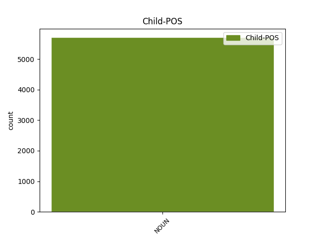

Distribution of features within this leaf

Agreement Rules sorted by frequency.
When the dependent token is None
1 Y _ _ _ _ 0 _ _ _
2 todas _ _ _ _ 0 _ _ _
3 las _ _ _ _ 0 _ _ _
4 miradas _ _ _ _ 0 _ _ _
5 convergen _ _ _ _ 0 _ _ _
6 en _ _ _ _ 0 _ _ _
7 la _ _ _ _ 0 _ _ _
8 lucecita _ _ _ _ 0 _ _ _
9 de _ _ _ _ 0 _ _ _
10 la _ _ _ _ 0 _ _ _
11 Moncloa _ _ _ _ 0 _ _ _
12 porque _ _ _ _ 0 _ _ _
13 de _ _ _ _ 0 _ _ _
14 allí _ _ _ _ 0 _ _ _
15 provienen _ _ _ _ 0 _ _ _
16 la _ _ _ _ 0 _ _ _
17 buena _ _ _ _ 0 _ _ _
18 nueva nueva NOUN NOUN Gender=Fem|Number=Sing 0 _ _ _
19 y _ _ _ _ 0 _ _ _
20 las _ _ _ _ 0 _ _ _
21 buenas _ _ _ _ 0 _ _ _
22 noticias noticia NOUN NOUN Gender=Fem|Number=Plur 18 conj _ SpaceAfter=No
23 . _ _ _ _ 0 _ _ _
Disagree Examples:
1 La _ _ _ _ 0 _ _ _
2 inversión _ _ _ _ 0 _ _ _
3 en _ _ _ _ 0 _ _ _
4 investigación _ _ _ _ 0 _ _ _
5 básica _ _ _ _ 0 _ _ _
6 es _ _ _ _ 0 _ _ _
7 el _ _ _ _ 0 _ _ _
8 camino _ _ _ _ 0 _ _ _
9 para _ _ _ _ 0 _ _ _
10 el _ _ _ _ 0 _ _ _
11 crecimiento crecimiento NOUN NOUN Gender=Masc|Number=Sing 0 _ _ _
12 y _ _ _ _ 0 _ _ _
13 la _ _ _ _ 0 _ _ _
14 prosperidad prosperidad NOUN NOUN Gender=Fem|Number=Sing 11 conj _ _
15 económica _ _ _ _ 0 _ _ _
16 , _ _ _ _ 0 _ _ _
17 afirmaron _ _ _ _ 0 _ _ _
18 hoy _ _ _ _ 0 _ _ _
19 empresarios _ _ _ _ 0 _ _ _
20 , _ _ _ _ 0 _ _ _
21 el _ _ _ _ 0 _ _ _
22 embajador _ _ _ _ 0 _ _ _
23 de _ _ _ _ 0 _ _ _
24 EEUU _ _ _ _ 0 _ _ _
25 y _ _ _ _ 0 _ _ _
26 el _ _ _ _ 0 _ _ _
27 director _ _ _ _ 0 _ _ _
28 de _ _ _ _ 0 _ _ _
29 investigación _ _ _ _ 0 _ _ _
30 de _ _ _ _ 0 _ _ _
31 la _ _ _ _ 0 _ _ _
32 Comunidad _ _ _ _ 0 _ _ _
33 de _ _ _ _ 0 _ _ _
34 Madrid _ _ _ _ 0 _ _ _
35 , _ _ _ _ 0 _ _ _
36 quienes _ _ _ _ 0 _ _ _
37 abogaron _ _ _ _ 0 _ _ _
38 por _ _ _ _ 0 _ _ _
39 elevar _ _ _ _ 0 _ _ _
40 la _ _ _ _ 0 _ _ _
41 " _ _ _ _ 0 _ _ _
42 cultura _ _ _ _ 0 _ _ _
43 científica _ _ _ _ 0 _ _ _
44 " _ _ _ _ 0 _ _ _
45 de _ _ _ _ 0 _ _ _
46 los _ _ _ _ 0 _ _ _
47 ciudadanos _ _ _ _ 0 _ _ _
48 y _ _ _ _ 0 _ _ _
49 la _ _ _ _ 0 _ _ _
50 " _ _ _ _ 0 _ _ _
51 cultura _ _ _ _ 0 _ _ _
52 de _ _ _ _ 0 _ _ _
53 la _ _ _ _ 0 _ _ _
54 innovación _ _ _ _ 0 _ _ _
55 " _ _ _ _ 0 _ _ _
56 de _ _ _ _ 0 _ _ _
57 los _ _ _ _ 0 _ _ _
58 empresarios _ _ _ _ 0 _ _ _
59 . _ _ _ _ 0 _ _ _
1 En _ _ _ _ 0 _ _ _
2 este _ _ _ _ 0 _ _ _
3 sentido _ _ _ _ 0 _ _ _
4 se _ _ _ _ 0 _ _ _
5 refirió _ _ _ _ 0 _ _ _
6 a _ _ _ _ 0 _ _ _
7 la _ _ _ _ 0 _ _ _
8 reciente _ _ _ _ 0 _ _ _
9 creación _ _ _ _ 0 _ _ _
10 del _ _ _ _ 0 _ _ _
11 Ministerio _ _ _ _ 0 _ _ _
12 de _ _ _ _ 0 _ _ _
13 Ciencia _ _ _ _ 0 _ _ _
14 y _ _ _ _ 0 _ _ _
15 Tecnología _ _ _ _ 0 _ _ _
16 y _ _ _ _ 0 _ _ _
17 a _ _ _ _ 0 _ _ _
18 las _ _ _ _ 0 _ _ _
19 primeras _ _ _ _ 0 _ _ _
20 declaraciones _ _ _ _ 0 _ _ _
21 de _ _ _ _ 0 _ _ _
22 su _ _ _ _ 0 _ _ _
23 titular _ _ _ _ 0 _ _ _
24 , _ _ _ _ 0 _ _ _
25 Anna _ _ _ _ 0 _ _ _
26 Birulés _ _ _ _ 0 _ _ _
27 , _ _ _ _ 0 _ _ _
28 sobre _ _ _ _ 0 _ _ _
29 el _ _ _ _ 0 _ _ _
30 impulso _ _ _ _ 0 _ _ _
31 de _ _ _ _ 0 _ _ _
32 la _ _ _ _ 0 _ _ _
33 investigación investigación NOUN NOUN Gender=Fem|Number=Sing 0 _ _ _
34 , _ _ _ _ 0 _ _ _
35 desarrollo desarrollo NOUN NOUN Gender=Masc|Number=Sing 33 appos _ _
36 e _ _ _ _ 0 _ _ _
37 innovación _ _ _ _ 0 _ _ _
38 . _ _ _ _ 0 _ _ _
1 Hernando _ _ _ _ 0 _ _ _
2 destacó _ _ _ _ 0 _ _ _
3 que _ _ _ _ 0 _ _ _
4 la _ _ _ _ 0 _ _ _
5 reforma reforma NOUN NOUN Gender=Fem|Number=Sing 0 _ _ _
6 laboral _ _ _ _ 0 _ _ _
7 de _ _ _ _ 0 _ _ _
8 1997 _ _ _ _ 0 _ _ _
9 , _ _ _ _ 0 _ _ _
10 fruto fruto NOUN NOUN Gender=Masc|Number=Sing 5 appos _ _
11 de _ _ _ _ 0 _ _ _
12 los _ _ _ _ 0 _ _ _
13 acuerdos _ _ _ _ 0 _ _ _
14 alcanzados _ _ _ _ 0 _ _ _
15 con _ _ _ _ 0 _ _ _
16 los _ _ _ _ 0 _ _ _
17 agentes _ _ _ _ 0 _ _ _
18 sociales _ _ _ _ 0 _ _ _
19 , _ _ _ _ 0 _ _ _
20 tuvo _ _ _ _ 0 _ _ _
21 efectos _ _ _ _ 0 _ _ _
22 " _ _ _ _ 0 _ _ _
23 extraordinarios _ _ _ _ 0 _ _ _
24 " _ _ _ _ 0 _ _ _
25 sobre _ _ _ _ 0 _ _ _
26 el _ _ _ _ 0 _ _ _
27 empleo _ _ _ _ 0 _ _ _
28 y _ _ _ _ 0 _ _ _
29 sirvió _ _ _ _ 0 _ _ _
30 para _ _ _ _ 0 _ _ _
31 frenar _ _ _ _ 0 _ _ _
32 el _ _ _ _ 0 _ _ _
33 crecimiento _ _ _ _ 0 _ _ _
34 " _ _ _ _ 0 _ _ _
35 desbocado _ _ _ _ 0 _ _ _
36 " _ _ _ _ 0 _ _ _
37 de _ _ _ _ 0 _ _ _
38 la _ _ _ _ 0 _ _ _
39 inestabilidad _ _ _ _ 0 _ _ _
40 laboral _ _ _ _ 0 _ _ _
41 que _ _ _ _ 0 _ _ _
42 se _ _ _ _ 0 _ _ _
43 produjo _ _ _ _ 0 _ _ _
44 a _ _ _ _ 0 _ _ _
45 partir _ _ _ _ 0 _ _ _
46 de _ _ _ _ 0 _ _ _
47 1986 _ _ _ _ 0 _ _ _
48 . _ _ _ _ 0 _ _ _
1 Además _ _ _ _ 0 _ _ _
2 de _ _ _ _ 0 _ _ _
3 acabar _ _ _ _ 0 _ _ _
4 con _ _ _ _ 0 _ _ _
5 los _ _ _ _ 0 _ _ _
6 contratos contrato NOUN NOUN Gender=Masc|Number=Plur 0 _ _ _
7 " _ _ _ _ 0 _ _ _
8 basura basura NOUN NOUN Gender=Fem|Number=Sing 6 appos _ SpaceAfter=No
9 " _ _ _ _ 0 _ _ _
10 , _ _ _ _ 0 _ _ _
11 el _ _ _ _ 0 _ _ _
12 portavoz _ _ _ _ 0 _ _ _
13 del _ _ _ _ 0 _ _ _
14 PP _ _ _ _ 0 _ _ _
15 señaló _ _ _ _ 0 _ _ _
16 que _ _ _ _ 0 _ _ _
17 dicha _ _ _ _ 0 _ _ _
18 reforma _ _ _ _ 0 _ _ _
19 introdujo _ _ _ _ 0 _ _ _
20 el _ _ _ _ 0 _ _ _
21 sistema _ _ _ _ 0 _ _ _
22 de _ _ _ _ 0 _ _ _
23 ayudas _ _ _ _ 0 _ _ _
24 a _ _ _ _ 0 _ _ _
25 la _ _ _ _ 0 _ _ _
26 contratación _ _ _ _ 0 _ _ _
27 indefinida _ _ _ _ 0 _ _ _
28 , _ _ _ _ 0 _ _ _
29 así _ _ _ _ 0 _ _ _
30 como _ _ _ _ 0 _ _ _
31 la _ _ _ _ 0 _ _ _
32 remodelación _ _ _ _ 0 _ _ _
33 del _ _ _ _ 0 _ _ _
34 contrato _ _ _ _ 0 _ _ _
35 estable _ _ _ _ 0 _ _ _
36 a _ _ _ _ 0 _ _ _
37 tiempo _ _ _ _ 0 _ _ _
38 parcial _ _ _ _ 0 _ _ _
39 que _ _ _ _ 0 _ _ _
40 han _ _ _ _ 0 _ _ _
41 mejorado _ _ _ _ 0 _ _ _
42 las _ _ _ _ 0 _ _ _
43 relaciones _ _ _ _ 0 _ _ _
44 laborales _ _ _ _ 0 _ _ _
45 . _ _ _ _ 0 _ _ _
1 Además _ _ _ _ 0 _ _ _
2 de _ _ _ _ 0 _ _ _
3 acabar _ _ _ _ 0 _ _ _
4 con _ _ _ _ 0 _ _ _
5 los _ _ _ _ 0 _ _ _
6 contratos _ _ _ _ 0 _ _ _
7 " _ _ _ _ 0 _ _ _
8 basura _ _ _ _ 0 _ _ _
9 " _ _ _ _ 0 _ _ _
10 , _ _ _ _ 0 _ _ _
11 el _ _ _ _ 0 _ _ _
12 portavoz _ _ _ _ 0 _ _ _
13 del _ _ _ _ 0 _ _ _
14 PP _ _ _ _ 0 _ _ _
15 señaló _ _ _ _ 0 _ _ _
16 que _ _ _ _ 0 _ _ _
17 dicha _ _ _ _ 0 _ _ _
18 reforma _ _ _ _ 0 _ _ _
19 introdujo _ _ _ _ 0 _ _ _
20 el _ _ _ _ 0 _ _ _
21 sistema sistema NOUN NOUN Gender=Masc|Number=Sing 0 _ _ _
22 de _ _ _ _ 0 _ _ _
23 ayudas _ _ _ _ 0 _ _ _
24 a _ _ _ _ 0 _ _ _
25 la _ _ _ _ 0 _ _ _
26 contratación _ _ _ _ 0 _ _ _
27 indefinida _ _ _ _ 0 _ _ _
28 , _ _ _ _ 0 _ _ _
29 así _ _ _ _ 0 _ _ _
30 como _ _ _ _ 0 _ _ _
31 la _ _ _ _ 0 _ _ _
32 remodelación remodelación NOUN NOUN Gender=Fem|Number=Sing 21 conj _ _
33 del _ _ _ _ 0 _ _ _
34 contrato _ _ _ _ 0 _ _ _
35 estable _ _ _ _ 0 _ _ _
36 a _ _ _ _ 0 _ _ _
37 tiempo _ _ _ _ 0 _ _ _
38 parcial _ _ _ _ 0 _ _ _
39 que _ _ _ _ 0 _ _ _
40 han _ _ _ _ 0 _ _ _
41 mejorado _ _ _ _ 0 _ _ _
42 las _ _ _ _ 0 _ _ _
43 relaciones _ _ _ _ 0 _ _ _
44 laborales _ _ _ _ 0 _ _ _
45 . _ _ _ _ 0 _ _ _